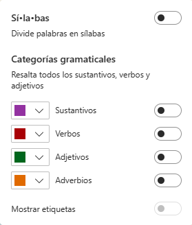

Navegadores más usados

Características de un navegador
La mayoría de navegadores tienen interfaces similares y presentan funcionalidades iguales o parecidas.
La barra direcciones
Todos los navegadores tienen en la parte superior un espacio para escribir la URL o dirección de la página web que vamos a visitar. En la barra de direcciones también se pueden realizar búsquedas en la web.
Seguridad
Un navegador seguro permite identificar, mediante filtros, si un sitio web es fraudulento, si contiene software malintencionado o ha sido simulado para cometer suplantación de identidad (phishing). Este no avisará antes de descargar archivos contagiados con algún virus informático.
Privacidad
La mayor parte de los navegadores nos permiten navegar de forma incógnita y así no ser rastreado por los sitios o las páginas web que visitamos.
Cookies
Cuando accedemos por primera vez a una página web, nos aparece una ventana emergente para darnos la opción de configurar las cookies. Las cookies son ficheros que envían las páginas web que visitamos a nuestro ordenador con el fin de identificar nuestro PC y registrar las acciones que realizamos mientras navegamos en ellas.
Ventajas: son útiles para recordar accesos. Si las cookies, cada vez que entras en una página tendrías que iniciar sesión en ella. También sirven, por ejemplo, para recordar, después de irte de la página de una tienda online, los productos que habías introducido en la cesta de la compra.
Inconvenientes: pueden conocer la información sobre tus hábitos de navegación, algo que pueden utilizar terceros para enviarte información relacionada con tus intereses, pero también para identificarte como usuario según las páginas que visitas.
Al entrar en un sitio web, este está obligado a avisarnos y a preguntarnos qué tipo de cookies queremos instalar, debido a la normativa que regula la protección de los datos de los ciudadanos que viven en la Unión Europea (la GDPR).
¿Qué tipos de cookies existen?
Según la duración:
- temporales, solo permanecen en tu navegador hasta que nos salimos de la página web.
- permanentes o persistentes, se quedan en nuestro ordenador para que la página que las instala pueda leerlas e identificarnos cada vez que volvamos a visitarla.
Según a quienes pertenezcan:
- Cookies propias: son las que utiliza una página web, y que han sido diseñadas por ella.
- Cookies de terceros: son las que otras empresas y servicios le han pedido a la página web que las instalen en nuestro ordenador cuando accedemos a dicha web.
Cuando entramos en un navegador y nos preguntan si queremos configurar las cookies, normalmente podremos activar o desactivar grupos de cookies dependiendo de sus finalidades.
Hay un tipo de cookies que generalmente no vamos a poder desactivar: las técnicas o necesarias. Son aquellas que sirven para optimizar el funcionamiento de la web.
También hay cookies de preferencias o de personalización, que almacenan nuestras preferencias y configuraciones en las webs a las que visitamos. Por ejemplo, permiten recordar nuestro idioma predeterminado, qué clase de navegador usamos,....
Las cookies de rendimiento y análisis almacenan información de las acciones que llevamos a cabo en la página que visitamos. Por ejemplo, registran los enlaces en los que hacemos clic más a menudo. El objetivo es tener estadísticas masivas mediante las cuales conocer qué elementos se usan más o dónde puede haber problemas y errores.
Y por último, están las cookies publicitarias o de marketing, que se encargan de gestionar la publicidad incluida en las páginas webs. Al instalarlas, estas cookies analizan en qué páginas entramos o qué búsquedas realizamos para recopilar información sobre nuestros gustos e intereses. De esta manera, elaboran perfiles que pueden vender o ceder a anunciantes para mostrarnos publicidad que pueda ser relevante para nosotros.
¿Qué cookies podemos configurar?
A través de la ventana emergente de configuración de cookies que nos aparece al acceder a la página, podremos desactivar algunos tipos de cookies.
Además, también podemos borrarlas de nuestro dispositivo a través de las opciones de los navegadores, ya sea en el PC o en el móvil. Al hacerlo, tendremos que volver a iniciar sesión si queremos entrar en algún sitio. También se perderán las preferencias.
Si desactivamos las cookies publicitarias para una página, no podrá recopilar información sobre nuestros intereses y gustos.
Si desactivamos las cookies de análisis, los responsables de las webs tampoco podrán registrar las acciones que realizamos en ellas para investigar qué elementos son más efectivos o más utilizados en su web, o dónde puede haber posibles problemas.
Y si desactivamos las cookies de preferencias, los posibles cambios que hagamos en la configuración de una web no se recordarán. Por ejemplo, si entramos en una tienda online y seleccionamos el idioma español, tendremos que volver a configurarlo las próximas veces que volvamos a acceder.
En términos de privacidad, hemos de tener en cuenta que, cuantas menos cookies activemos, más privacidad tendremos a la hora de navegar por Internet, pero, a cambio, menos personalización encontraremos al navegar. Así pues, la clave está en que encontremos un equilibrio personal entre privacidad y experiencia.
Microsoft Edge
Es el navegador que viene integrado con Windows. Está basado en Chromium, la misma tecnología de código abierto que Chrome.
Edge basado en Chromium está disponible desde el 15 de enero de 2020 para las últimas versiones de Windows, también para macOS, iOS y Android. Es posible descargarlo de la página oficial de Microsoft.
Algunas características interesantes de Microsoft Edge son:
Pestañas en espera cuando no las usas
Libera recursos del sistema como memoria y CPU, asegurando así que las pestañas que sí estás utilizando poseen los recursos que necesitan. Por defecto, las pestañas se ponen en modo espera después de una hora de inactividad, aunque es posible cambiar el valor de este parámetro.
El motor de búsqueda por defecto es Bing
A partir de la versión 111 o posterior de Edge, Bing incluye ChatGPT, un software de inteligencia artificial desarrollada por OpenAI. Se trata de una herramienta novedosa que supone toda una revolución en las búsquedas en Internet. Con esta nueva función, llamada Copilot, podemos chatear con Bing, ver información sobre la página actual, o hacer que la IA genere texto por nosotros. Para comenzar a utilizar la herramienta, tan solo hay que pulsar el botón de Bing de la esquina superior derecha:
Se muestran tres pestañas principales:
- Chat: nos permite conversar con la inteligencia artificial de Bing.
- Redactar: indicando el tema y otros parámetros y pulsando en el botón "Generar borrador", podemos pedir a la herramienta que nos redacte un párrafo, un correo, etc.
- Insights: muestra enlaces e información relacionada con la página que estamos viendo.
Seguridad
Edge posee herramientas para proteger relacionadas con la seguridad como SmartScreen (protege frente a descargas y sitios malintencionados), monitor de contraseñas, búsqueda InPrivate (navegación privada) y modo infantil. Para configurar los parámetros asociados a estas herramientas hay que pulsar en el botón de los tres puntos y luego en Configuración.
Creador de Imágenes de Bing
Cuando buscamos imágenes en Bing, nos aparece un botón a la derecha que nos da la posibilidad de generar una imagen, relacionada con el tema que deseemos, usando la Inteligencia Artificial incorporada en Bing. De momento, solo admite frases en inglés para especificarle acerca de qué concepto o conceptos tiene que generar la imagen.
Escribiendo, como ejemplo, las palabras "cat digital information" nos genera estas imágenes:
Probando ahora con estas otras "A cat eating a digital mouse drawing", obtenemos:
Lectura inmersiva
Este modo facilita la lectura de una página web. Lo que hace es prescindir de todos aquellos elementos que puedan distraer al usuario como botones o ventanas emergentes. Para acceder a este modo, una vez que hemos entrado en una página web, hay que pulsar el botón situado en la zona derecha de la barra de direcciones, o bien, la tecla F9.
Si no aparece el icono o con la tecla F9 no se activa el modo Lectura Inmersiva, podemos seleccionar el texto y pulsar con el botón derecho sobre la selección y elegir "Abrir selección en el Lector Inmersivo".
En el modo Lectura Inmersiva disponemos de una barra de herramientas con opciones de lectura en voz alta, preferencias de texto y herramientas gramaticales.
El botón Herramientas gramaticales nos permite dividir las palabras en sílabas, resaltar verbos, adjetivos, sustantivos, etc.

Barra lateral
Al pulsar el botón Bing, aparece una barra lateral en la parte derecha de la ventana que nos da acceso rápido a aplicaciones y herramientas dentro de la pestaña actual. Disponemos de traductor, convertidor, calculadora, juegos, etc.
Juegos
Microsoft Edge posee características exclusivas de Xbox y otras características integradas, como una página de inicio de juegos dedicada y un modo de eficiencia, que mejora el rendimiento de los juegos de PC. Para acceder a la página de juegos, pulsaremos el botón de Bing y luego en el botón cuyo icono son piezas de ajedrez.
Microsoft nos ofrece un juego de entretenimiento llamado Surf, para acceder a él podemos copiar la siguiente dirección en el navegador y pulsar Enter: edge://surf.